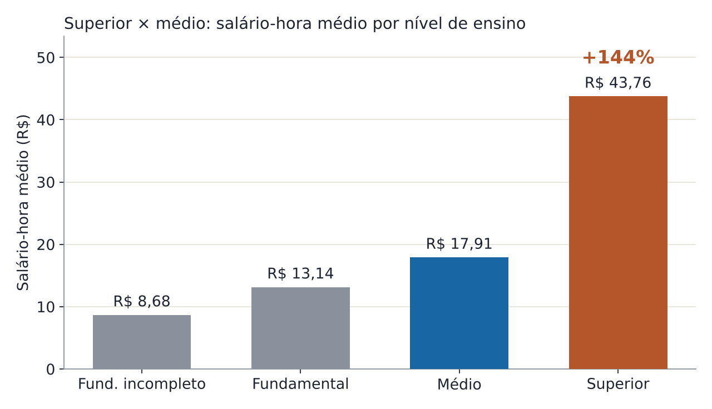
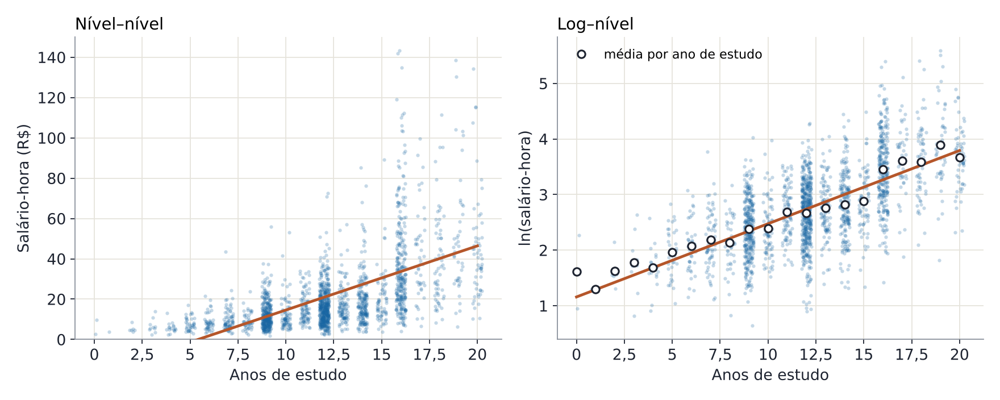
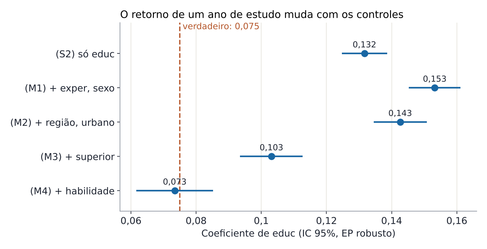
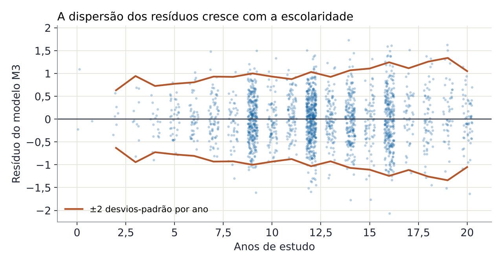

Ao final deste laboratório você deve ser capaz de
- estimar uma regressão simples à mão e conferir com o Excel e o Gretl;
- interpretar coeficientes em modelos nível–nível, log–nível e com variáveis binárias;
- ler uma tabela de regressão múltipla e explicar por que os coeficientes mudam entre colunas;
- calcular o viés de variável omitida e reconhecer quando a significância não garante causalidade;
- diagnosticar heterocedasticidade e usar erros-padrão robustos.
1. A pergunta
Um reel sobre universidade pública abre com um número da OCDE (Education at a Glance 2025): no Brasil, quem tem diploma de ensino superior ganha 148% a mais do que quem parou no ensino médio. Na média dos países da OCDE, a diferença é de 54%.
O número descreve bem o mercado de trabalho brasileiro. Mas ele responde a outra pergunta, que não é a do efeito do diploma. Quem conclui a faculdade difere de quem não conclui em muitas coisas além do diploma: habilidade, escolaridade dos pais, região, idade. A regressão múltipla tenta separar essas coisas. Este laboratório mostra até onde ela consegue ir.
Por que dados simulados?
Com dados reais, nunca sabemos o efeito verdadeiro. Aqui sabemos: o processo gerador foi escrito pelo professor. Isso permite ver, com números, quando a regressão acerta e quando ela erra mesmo com coeficientes “muito significativos”.
2. A base de dados
São 2.000 trabalhadores ocupados de 25 a 64 anos, fictícios, gerados para lembrar a PNAD Contínua. Baixe os arquivos:
dados/pnad_simulada.csv: a base (abre no Gretl, no Excel, no R ou no Stata);dados/laboratorio_excel.xlsx: a base com as abas de exercício e todas as contas em fórmulas;codigo/laboratorio.inp: o roteiro completo do Gretl, comentado;- o Gretl é gratuito: gretl para Windows.
| Variável | Descrição |
|---|---|
salario_hora, renda_mensal | Salário por hora e renda mensal do trabalho (R$) |
educ | Anos de estudo (0 a 20): 9 = fundamental, 12 = médio, 16 = superior |
nivel, fundamental, medio, superior | Nível concluído e suas dummies (base: fundamental incompleto) |
exper, idade | Experiência potencial = idade − anos de estudo − 6 |
mulher, urbano | Dummies de sexo e de área urbana |
regiao, norte, nordeste, sul, centro_oeste | Região e suas dummies (base: Sudeste) |
educ_mae, horas | Anos de estudo da mãe; horas trabalhadas por semana |
habilidade | Habilidade padronizada. Não é observada na vida real; aqui está disponível para fins didáticos |
O processo gerador (o “gabarito”)
A habilidade também aumenta a escolaridade (correlação de 0,60 entre as duas). A variância de \(u\) cresce com os anos de estudo. Guarde esses dois fatos: eles explicam o viés da seção 5 e a heterocedasticidade da seção 7. O gerador está em codigo/gerar_base.py.
3. Regressão linear simples
Primeiro, a descrição. O salário-hora médio de quem tem superior é R$ 43,76; o de quem tem médio, R$ 17,91: um prêmio bruto de 144%, muito perto do número do reel. Na mediana, o prêmio é de 124%.

3.1 O estimador de MQO à mão
A aba 1_simples da planilha faz cada uma dessas contas em uma célula e as confere com as funções prontas INCLINAÇÃO, INTERCEPÇÃO, RQUAD e EPADYX.
3.2 Nível ou logaritmo?

| Modelo | (S1) salário-hora | (S2) ln(salário-hora) | (S3) ln(salário-hora) |
|---|---|---|---|
| educ | 3,1830*** (0,1606) | 0,1317*** (0,0035) | |
| superior | 1,0189*** (0,0339) | ||
| constante | −17,2438*** (1,6600) | 1,1588*** (0,0427) | 2,5340*** (0,0152) |
| \(n\) / \(R^2\) | 2.000 / 0,269 | 2.000 / 0,412 | 2.000 / 0,337 |
Erros-padrão robustos (HC1) entre parênteses. *** p<0,01. Os coeficientes são idênticos no Excel, que mostra só o erro-padrão clássico (0,1175 para educ em S1).
Interpretação
- S1 (nível–nível): cada ano de estudo está associado a R$ 3,18 a mais por hora. O intercepto negativo não tem leitura econômica: é o prolongamento da reta para zero anos de estudo.
- S2 (log–nível): cada ano de estudo está associado a salário ≈ 13,2% maior; exatamente, \(100(e^{0{,}1317}-1)=14{,}1\%\). O log acomoda o leque de S1 e eleva o \(R^2\). Os dois \(R^2\) não se comparam, porque as variáveis dependentes são diferentes.
- S3 (regressor binário): com uma única dummy, a constante é a média de ln(salário) do grupo base e o coeficiente é a diferença de médias. Restrita a quem tem médio ou superior, a regressão
salario_hora ~ superiordá constante 17,91 (a média do médio) e coeficiente 25,85: \(25{,}85/17{,}91 = 144\%\), o mesmo prêmio do gráfico. Em log, o coeficiente é 0,823, ou 128% na média geométrica. - Nenhum desses números é efeito causal. O verdadeiro é 7,5% por ano mais o salto do diploma, e nenhuma coluna controla pela habilidade.
4. Regressão linear múltipla
Na regressão múltipla, cada coeficiente mede a associação com \(y\) mantidas constantes as demais variáveis do modelo. Vamos acrescentar controles em blocos e acompanhar o coeficiente de educ.
| Dependente: ln(salário-hora) | (M1) | (M2) | (M3) | (M4) |
|---|---|---|---|---|
| educ | 0,1532*** (0,0041) | 0,1426*** (0,0041) | 0,1031*** (0,0049) | 0,0734*** (0,0060) |
| superior | 0,4739*** (0,0436) | 0,4841*** (0,0427) | ||
| exper | 0,0331*** (0,0041) | 0,0317*** (0,0040) | 0,0395*** (0,0040) | 0,0384*** (0,0039) |
| exper² | −0,00041*** (0,00007) | −0,00040*** (0,00007) | −0,00054*** (0,00007) | −0,00056*** (0,00007) |
| mulher | −0,0755*** (0,0252) | −0,0648*** (0,0246) | −0,0633*** (0,0239) | −0,0576** (0,0234) |
| norte | −0,1398*** (0,0492) | −0,1422*** (0,0481) | −0,1907*** (0,0473) | |
| nordeste | −0,2842*** (0,0310) | −0,2716*** (0,0302) | −0,3311*** (0,0308) | |
| sul | −0,0570 (0,0358) | −0,0383 (0,0347) | −0,0411 (0,0339) | |
| centro_oeste | 0,0233 (0,0493) | 0,0389 (0,0489) | 0,0241 (0,0483) | |
| urbano | 0,0608* (0,0351) | 0,0581* (0,0343) | 0,0823** (0,0338) | |
| habilidade | 0,1400*** (0,0161) | |||
| \(n\) | 2.000 | 2.000 | 2.000 | 2.000 |
| \(R^2\) / \(\bar R^2\) | 0,452 / 0,451 | 0,477 / 0,474 | 0,509 / 0,506 | 0,528 / 0,525 |
Erros-padrão robustos (HC1) entre parênteses. *** p<0,01; ** p<0,05; * p<0,10. Todos os modelos têm constante (omitida).
Interpretação
- M1: com mesma experiência e sexo, um ano a mais de estudo está associado a salário 15,3% maior. O coeficiente sobe em relação a S2 porque quem estudou mais tem, em média, menos experiência potencial.
- M2: as regiões tiram um pouco do coeficiente: parte da associação vinha de o Sudeste ter mais escolaridade e salários maiores. Mantidos educação, experiência e sexo, quem mora no Nordeste ganha \(100(e^{-0{,}284}-1)\approx\) 25% menos que no Sudeste.
- M3: com a dummy de superior, educ cai para 0,103. Sem ela, o coeficiente linear absorvia o salto do diploma. O diploma soma \(100(e^{0{,}474}-1)\approx 61\%\) além dos anos de estudo.
- M4: com a habilidade, educ cai para 0,073, perto do verdadeiro (0,075). Na vida real, esta coluna não existe.
5. Viés de variável omitida

Se o modelo verdadeiro inclui a habilidade e nós a omitimos, o coeficiente “curto” de educ é uma combinação exata de três números:
Confira: \(0{,}0734+0{,}1400\times0{,}2120=0{,}1031\). Não é aproximação: é uma identidade do MQO. O viés é positivo porque a habilidade aumenta o salário (\(\hat\gamma>0\)) e anda junto com a escolaridade (\(\hat\delta>0\)). Sem a habilidade, superestimaríamos o retorno de um ano de estudo em cerca de 40%.
A lição
Todas as colunas da tabela têm p-valores minúsculos para educ. Significância estatística mede precisão, não ausência de viés. Por isso os estudos citados no reel usam desenhos como a regressão descontínua na nota de corte do vestibular (Conteúdo 7) e experimentos naturais, em vez de apenas acrescentar controles.
6. Especificação
6.1 Termo quadrático: a experiência tem retornos decrescentes
Em M3, o efeito marginal de um ano de experiência é \(\hat\beta_{exper}+2\hat\beta_{exper^2}\,exper\): 2,9% aos 10 anos e 0,7% aos 30. O salário atinge o máximo com \(-\hat\beta_{exper}/(2\hat\beta_{exper^2})\approx\) 36,8 anos de experiência. Isoladamente os dois termos importam pouco; o teste F conjunto dá F = 65,4.
6.2 Dummies de grupo e o teste F
As quatro dummies de região são comparadas com o Sudeste. Sul e Centro-Oeste não diferem do Sudeste a 10%, mas o teste F conjunto robusto rejeita com folga que todas sejam nulas (F = 23,3). No Gretl: omit regioes --test-only logo depois de estimar M2.
6.3 Dummies de nível de ensino
Trocando os anos de estudo por dummies de nível (M6, com os controles de M2), os prêmios sobre o fundamental incompleto são de 43% (fundamental), 96% (médio) e 380% (superior). O superior paga \(100(e^{1{,}568-0{,}675}-1)\approx\) 144% a mais que o médio. O retorno cresce com o nível: a relação entre estudo e salário não é linear.
O prêmio condicional coincide com o bruto por acaso, não porque os controles não importem. Quem tem superior tem menos experiência potencial, o que puxa o prêmio para cima ao controlar, e mora mais no Sudeste e em área urbana, o que puxa para baixo.
6.4 Interação: o retorno da educação difere por sexo?
Em M5, que acrescenta \(educ\times mulher\) a M4, o coeficiente de mulher é −0,179 e o da interação, 0,0098 (p = 0,12). A diferença salarial entre mulheres e homens depende dos anos de estudo: \(-0{,}179+0{,}0098\,educ\), ou seja, −10,0 log-pontos com 8 anos e −2,2 com 16. O coeficiente de mulher sozinho é a diferença para zero anos de estudo, uma situação quase inexistente na amostra.
O valor verdadeiro da interação é 0,01, e mesmo assim ela não é significativa a 5%. Falta de significância não prova ausência de efeito: com 2.000 observações, a interação é estimada com pouca precisão.
7. Diagnóstico

- Heterocedasticidade: a dispersão dos resíduos cresce com a escolaridade. O teste de White rejeita a homocedasticidade (LM = 90,2; p < 0,001). Os coeficientes continuam não viesados, mas os erros-padrão clássicos não valem. Use
--robustno Gretl. Em S1 (nível), o erro-padrão de educ passa de 0,118 (clássico) para 0,161 (robusto). - Multicolinearidade: os VIFs de exper e exper² são ≈ 19, o esperado quando um regressor entra com seu quadrado. Os demais ficam abaixo de 3. Não há nada a corrigir: testamos os dois termos juntos.
8. Roteiro no Gretl e no Excel
- Instale o Gretl: gretl para Windows.
- Salve
laboratorio.inpepnad_simulada.csvna mesma pasta. - No Gretl: Arquivo › Arquivos de script › Abrir arquivo de script. Rode tudo com Ctrl+R ou selecione um bloco e rode só ele.
- Pelo menu também funciona: Modelo › Mínimos Quadrados Ordinários, marque “Erros-padrão robustos”.
# =====================================================================
# Laboratório "Vale a pena estudar?" — regressão linear simples e múltipla
# Prof. Cleiton Franco · UNEMAT
#
# Base: dados/pnad_simulada.csv (2.000 trabalhadores FICTÍCIOS, estilo PNAD)
# Como usar no Gretl:
# 1. Salve este arquivo na MESMA pasta do pnad_simulada.csv.
# 2. Arquivo > Arquivos de script > Abrir arquivo de script... > laboratorio.inp
# 3. Rode tudo (Ctrl+R) ou selecione um bloco e rode só ele.
# Linhas que começam com # são comentários: o Gretl não as executa.
# =====================================================================
open pnad_simulada.csv --quiet
set hc_version 1 # erros-padrão robustos tipo HC1 (os mesmos do Stata)
modeltab free # zera a tabela de modelos
# ---------------------------------------------------------------------
# PARTE 0 · Conhecendo os dados
# ---------------------------------------------------------------------
summary salario_hora renda_mensal educ exper idade horas mulher urbano --simple
# Salário-hora médio por nível de ensino: compare Superior com Médio
summary salario_hora --by=superior --simple
summary salario_hora --by=medio --simple
# Variáveis novas
series lsal = log(salario_hora) # log natural do salário-hora
series exper2 = exper^2 # experiência ao quadrado
series educ_mulher = educ * mulher # interação
setinfo lsal --description="ln(salário-hora)"
corr salario_hora lsal educ exper habilidade
# Gráficos de dispersão com a reta de MQO
gnuplot salario_hora educ --fit=linear --output=display
gnuplot lsal educ --fit=linear --output=display
# ---------------------------------------------------------------------
# PARTE 1 · Regressão linear SIMPLES
# ---------------------------------------------------------------------
# (S1) Nível–nível: cada ano de estudo soma quantos R$ ao salário-hora?
ols salario_hora const educ
# (S2) Log–nível: cada ano de estudo aumenta o salário em quantos %?
ols lsal const educ
modeltab add
# Leitura: 100*b1 ≈ variação % do salário por ano de estudo.
printf "Variação exata: %.1f%% por ano de estudo\n", 100*(exp($coeff(educ))-1)
# (S3) Regressor binário: superior completo × demais
ols lsal const superior
printf "Prêmio do superior (em média geométrica): %.0f%%\n", 100*(exp($coeff(superior))-1)
# (S4) Só quem tem ensino médio ou superior — o "148%" do reel
smpl medio==1 || superior==1 --restrict
ols salario_hora const superior
# Intercepto = média do grupo Médio; b1 = diferença de médias (R$)
printf "Prêmio sobre a média aritmética: %.0f%%\n", 100*$coeff(superior)/$coeff(const)
smpl full
# ---------------------------------------------------------------------
# PARTE 2 · Regressão linear MÚLTIPLA
# ---------------------------------------------------------------------
list regioes = norte nordeste sul centro_oeste # base: Sudeste
list ctrl = exper exper2 mulher regioes urbano
# (M1) educação + experiência (forma quadrática) + sexo
ols lsal const educ exper exper2 mulher --robust
modeltab add
# (M2) + região e área urbana
ols lsal const educ ctrl --robust
modeltab add
# Teste F (robusto): as quatro dummies de região são conjuntamente nulas?
omit regioes --test-only
# (M3) + diploma de superior: o retorno não é linear nos anos de estudo
ols lsal const educ superior ctrl --robust
modeltab add
# Efeito marginal da experiência e ponto de máximo
printf "Exper: efeito marginal aos 10 anos = %.4f\n", $coeff(exper)+2*$coeff(exper2)*10
printf "Exper: efeito marginal aos 30 anos = %.4f\n", $coeff(exper)+2*$coeff(exper2)*30
printf "Salário máximo com %.1f anos de experiência\n", -$coeff(exper)/(2*$coeff(exper2))
# Diagnóstico: heterocedasticidade (White) e multicolinearidade (VIF)
ols lsal const educ superior ctrl --quiet
modtest --white
vif
# (M4) + habilidade (na vida real NÃO é observada; aqui é didática)
ols lsal const educ superior ctrl habilidade --robust
modeltab add
scalar b_longo = $coeff(educ)
scalar gama = $coeff(habilidade)
# Viés de variável omitida: b_curto = b_longo + gama * delta
ols habilidade const educ superior ctrl --quiet
scalar delta = $coeff(educ)
printf "b_longo = %.4f | gama = %.4f | delta = %.4f\n", b_longo, gama, delta
printf "b_longo + gama*delta = %.4f (compare com educ em M3)\n", b_longo + gama*delta
# (M5) Interação: o retorno da educação difere entre homens e mulheres?
ols lsal const educ superior mulher educ_mulher exper exper2 regioes urbano habilidade --robust
modeltab add
printf "Diferença salarial de gênero com 8 anos de estudo: %.3f\n", $coeff(mulher)+8*$coeff(educ_mulher)
printf "Diferença salarial de gênero com 16 anos de estudo: %.3f\n", $coeff(mulher)+16*$coeff(educ_mulher)
# (M6) Dummies de nível de ensino (base: fundamental incompleto)
ols lsal const fundamental medio superior ctrl --robust
printf "Médio vs. fund. incompleto: %.0f%%\n", 100*(exp($coeff(medio))-1)
printf "Superior vs. fund. incompleto: %.0f%%\n", 100*(exp($coeff(superior))-1)
printf "Superior vs. médio: %.0f%%\n", 100*(exp($coeff(superior)-$coeff(medio))-1)
# Tabela comparativa (S2, M1–M5)
modeltab show- Abra
laboratorio_excel.xlsx. A abaLEIA-MEtraz o dicionário e o passo a passo. - 1_simples: o MQO calculado célula a célula para S1 e S2, conferido com
INCLINAÇÃO,INTERCEPÇÃO,RQUADeEPADYX. - 2_dummy: médias e medianas por nível com
MÉDIASEe o prêmio do superior na média aritmética, na mediana e na média geométrica. - 3_multipla: M1 a M4 com
PROJ.LIN(em inglês,LINEST). Atenção: os coeficientes saem em ordem inversa à das colunas de X, com a constante por último. No fim da aba, o viés de variável omitida é recalculado com fórmulas e o efeito marginal da experiência muda quando você altera a célula amarela. - Saída completa: Dados › Análise de Dados › Regressão. Se o botão não aparecer: Arquivo › Opções › Suplementos › Suplementos do Excel › Ir e marque “Ferramentas de Análise”. Em M1, o Y é
dados!S1:S2001(lsal) e o X édados!J1:M2001, com “Rótulos” marcado. As colunas de X precisam ser vizinhas. - O Excel calcula apenas erros-padrão clássicos. Os coeficientes batem com o Gretl até a última casa; os erros-padrão diferem um pouco por causa da heterocedasticidade (seção 7).
O professor pode regenerar a base e conferir todos os números desta página com dois scripts:
codigo/gerar_base.py: simula a base (semente fixa);codigo/analise_referencia.py: estima todos os modelos, gera as figuras e gravaresultados_referencia.json;codigo/gerar_planilha.py: monta a planilha do Excel.
9. Exercícios
-
Em S1, o intercepto é −17,24. Um trabalhador sem nenhum ano de estudo ganha −R$ 17,24 por hora? O que esse número revela sobre o modelo nível–nível?
Ver gabarito
Não. O intercepto é a extrapolação da reta até educ = 0, onde quase não há observações. O valor negativo mostra que a reta em nível não descreve bem a relação: os salários crescem proporcionalmente, não em reais constantes. O modelo log–nível (S2) evita salários previstos negativos.
-
Usando S2, calcule a variação percentual aproximada e a exata do salário associada a 4 anos a mais de estudo.
Ver gabarito
Aproximada: \(4\times13{,}17\%\approx52{,}7\%\). Exata: \(100(e^{4\times0{,}1317}-1)=100(e^{0{,}527}-1)\approx\mathbf{69{,}4\%}\). Para variações grandes, a aproximação \(100\beta\) subestima bastante.
-
O prêmio do superior sobre o médio é de 144% na média aritmética e de 128% quando calculado pela diferença das médias de ln(salário). Por que os dois números diferem? Qual é o “148%” da OCDE?
Ver gabarito
A diferença de médias do log corresponde à razão das médias geométricas, que pesam menos os salários muito altos. Como a distribuição salarial do grupo com superior é mais assimétrica (cauda direita longa), a média aritmética fica mais acima da geométrica nesse grupo. O indicador da OCDE compara rendimentos relativos, mais próximo da comparação aritmética.
-
Por que o coeficiente de educ aumenta de S2 (0,132) para M1 (0,153) quando incluímos a experiência?
Ver gabarito
Pela fórmula do viés: a experiência aumenta o salário e é negativamente correlacionada com a escolaridade (quem estudou mais começou a trabalhar mais tarde). O viés de omitir a experiência é negativo, então S2 subestimava a associação. Variáveis omitidas podem viesar para baixo ou para cima.
-
No Gretl, rode M3 e acrescente
educ_maeno lugar da habilidade. O coeficiente de educ se aproxima de 0,075? Explique.Ver gabarito
Quase não muda: passa de 0,1031 para 0,1021, e educ_mae tem coeficiente próximo de zero. A escolaridade da mãe explica parte da escolaridade do filho, mas, depois dos controles, carrega pouca informação sobre a habilidade, e não afeta o salário diretamente. Uma proxy fraca não corrige o viés. Seria preciso outra estratégia de identificação.
-
Um colega propõe controlar pela ocupação atual (gerente, técnico, operário) para “isolar” o efeito do diploma. Comente.
Ver gabarito
É um controle ruim. A ocupação é em grande parte consequência do diploma: é um mediador. Controlar por ela compara, por exemplo, gerentes com e sem diploma e elimina justamente o canal pelo qual o diploma aumenta o salário. O coeficiente resultante subestima o efeito total. Controles devem ser determinados antes do “tratamento”.
-
Em M3 (Excel, aba 3_multipla), mude a célula amarela para 20 e para 40 anos de experiência. Interprete os dois efeitos marginais.
Ver gabarito
\(\partial\ln sal/\partial exper=0{,}0395-2(0{,}000536)\,exper\). Aos 20 anos: ≈ 0,018, ou seja, mais um ano de experiência está associado a salário 1,8% maior. Aos 40 anos: ≈ −0,003, levemente negativo, pois já passou do pico de 36,8 anos.